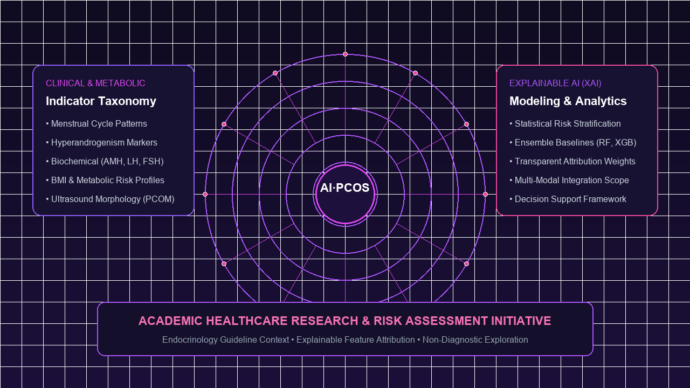

AI-Assisted PCOS Research
Exploring Artificial Intelligence for Better Understanding of Women's Health.
Outputs explored under this initiative are intended strictly for exploratory risk assessment and data-driven clinical decision support. The system is not a clinically validated diagnostic tool and does not replace qualified clinical evaluation or licensed medical diagnosis.
An interdisciplinary research initiative investigating how machine learning, healthcare data analytics, and clinical indicators can contribute to PCOS-related risk assessment and women's health monitoring.

Clinical Relevance of PCOS in Women's Health
Primary clinical framing guided by the Government of India Standard Treatment Guidelines for Endocrinology (Polycystic Ovary Syndrome section).
Menstrual Irregularities
Ovulatory dysfunction frequently presents through irregular, infrequent (oligomenorrhea), or prolonged menstrual cycles that warrant systematic clinical history evaluation.
Clinical or Biochemical Hyperandrogenism
Clinical manifestations (such as hirsutism, acne, or pattern hair loss) and biochemical elevations in circulating androgen levels represent key diagnostic dimensions.
Polycystic Ovarian Morphology
Characteristic ultrasound appearances (such as follicle counts ≥ 12-20 per ovary or ovarian volume > 10 mL) evaluated within established age-appropriate thresholds.
Metabolic Health Considerations
PCOS frequently intersects with broader cardiometabolic risks including central adiposity (waist-to-hip ratio), dyslipidemia, and arterial pressure requiring comprehensive screening.
Insulin Resistance & Glucose Intolerance
Underlying cellular insulin resistance can amplify ovarian androgen synthesis and elevate long-term susceptibility to impaired fasting glucose, metabolic syndrome, and Type-2 diabetes mellitus over time.
PCOS (Polycystic Ovary Syndrome)
A recognized multi-system endocrine, reproductive, and metabolic disorder characterized by standardized international diagnostic criteria (Rotterdam criteria). Involves persistent ovulatory dysfunction, androgen excess, and systemic metabolic complications after systematically excluding mimicking pathologies.
PCOD (Informal Usage)
A broader, informally used term in regional colloquial discussions often referring loosely to ultrasound findings of polycystic-appearing ovaries or transient cycle irregularity without necessarily satisfying the rigorous endocrine and metabolic characterization of clinical PCOS.
Why Interpretable Computational Analysis Matters
Addressing critical clinical gaps where transparent, multi-indicator computational models can assist clinical research and healthcare awareness.
Complexity of Clinical Indicators
PCOS evaluation spans reproductive, endocrine, metabolic, and imaging variables rather than a single isolated biomarker, requiring multi-factorial evaluation.
Variation in Symptoms & Presentations
Phenotypes differ substantially across individuals, ethnicities, and life stages—making uniform rule-of-thumb pattern recognition challenging.
Multi-Parameter Assessment Importance
Assessing menstrual patterns alongside metabolic markers (glucose, lipids, BMI) and endocrine profiles (AMH, LH/FSH) is essential for holistic understanding.
Challenges in Health Data Interpretation
Heterogeneous health records, missing laboratory panels, and varying documentation conventions across Indian healthcare facilities complicate structured analysis.
Role of Explainable AI in Decision Support
Black-box scoring methods lack clinical trustworthiness. Transparent models showing which physiological indicators contribute to risk stratification empower clinicians to audit computational suggestions responsibly.
Core Investigative Research Directions
Structured objectives guiding the exploratory computational framework and academic inquiry.
Study Clinical Indicators
Synthesize clinical, endocrine, and metabolic indicators highlighted in standard endocrinology guidelines to establish a robust variable dictionary.
Explore Machine-Learning Approaches
Investigate supervised classification and statistical risk-stratification techniques on appropriate structured health variables.
Analyse Parameter Relationships
Examine multivariate correlations and co-occurrence patterns spanning cycle regularity, metabolic factors, and hormonal markers.
Investigate Data-Driven Monitoring
Evaluate structured longitudinal indicator tracking approaches that promote early healthcare awareness and lifestyle intervention.
Explore Explainable AI (XAI)
Incorporate transparent feature-attribution methods so model outputs remain traceable to meaningful biological and clinical variables.
Evaluate Decision-Support Role
Critically assess where computational analysis can complement—and explicitly never replace—structured clinical judgment by licensed practitioners.
Clinical Foundation & Reference Framework
Grounded in established international diagnostic consensus and national healthcare guidelines.
Rotterdam Diagnostic Framework (Clinical Reference Context)
In the applicable adult diagnostic context, the internationally accepted Rotterdam consensus criteria require at least two of the following three manifestations—after systematically excluding alternative endocrine or mimicking etiologies (e.g. non-classical congenital adrenal hyperplasia, hyperprolactinemia, thyroid dysfunction):
Ovulatory dysfunction / chronic menstrual irregularity (oligomenorrhea or amenorrhea).
Clinical signs (hirsutism, acne) and/or biochemical hyperandrogenism.
Polycystic ovarian morphology (PCOM) observed via pelvic ultrasound examination.
Clinical Concept: Clinical Presentation
Features menstrual cycle disturbances including oligomenorrhea (cycles > 35 days) or amenorrhea (absence of menses for 3-6 months), clinical manifestations of cutaneous androgen excess (hirsutism quantified by Ferriman-Gallwey scoring, persistent adult cystic acne, androgenic alopecia), alongside weight variations and metabolic risk indicators.
Clinical Concept: Diagnostic Criteria
Guided by the Rotterdam Consensus (2003) and endorsed by international guidelines (Monash 2023). Requires 2 out of 3 features in adults. In adolescent populations within 8 years of menarche, ultrasound criteria are generally withheld due to physiological multicyclic ovaries, emphasizing persistent ovulatory dysfunction and biochemical androgen excess.
Clinical Concept: Investigations
Biochemical testing includes Free and Total Testosterone, Sex Hormone-Binding Globulin (SHBG) to calculate Free Androgen Index (FAI), LH:FSH ratio, Anti-Müllerian Hormone (AMH), alongside fasting plasma glucose, 2-hour Oral Glucose Tolerance Test (OGTT), fasting lipid profiles, and pelvic ultrasound imaging.
Clinical Concept: Metabolic Considerations
Insulin resistance affects 50-70% of individuals across both lean and hyper-BMI phenotypes. Compensatory hyperinsulinemia stimulates ovarian theca cell androgen production while lowering hepatic SHBG synthesis, intensifying bioavailable circulating androgens and creating a bidirectional endocrine-metabolic cascade.
Clinical Concept: Differential Diagnosis
Essential exclusion of mimicking conditions: Thyroid disorders (serum TSH), hyperprolactinemia (serum prolactin), non-classical 21-hydroxylase congenital adrenal hyperplasia (follicular phase 17-hydroxyprogesterone), Cushing's syndrome, and androgen-secreting neoplasms.
Clinical Concept: Management Considerations
Personalized lifestyle modifications (caloric optimization, resistance and aerobic physical activity) form first-line foundational intervention. Pharmacological pathways under clinical guidance include combined oral contraceptives for cycle and androgen regulation, metformin for metabolic sensitization, and anti-androgens where indicated.
Government of India — Standard Treatment Guidelines: Endocrinology (PCOS Section)
Referenced as the primary clinical framework in this research design. Direct guideline documentation is held in public/docs/ for verification against national clinical standards.
Structured Ten-Stage Research Workflow
A systematic, leak-free academic methodology transitioning from clinical review to explainable decision support.
Clinical Literature Review
Synthesize endocrinology guidelines (GOI, Rotterdam, Monash) and peer-reviewed PCOS ML literature.
Research Question Definition
Formulate bounded questions for non-invasive risk stratification and feature interpretability.
Data Source Identification
Identify ethically sourced, de-identified datasets (ICMR, Kaggle, Mendeley) matching indicator criteria.
Data Cleaning & Preprocessing
Handle missing clinical panels, multi-unit standardizations, and physiological range audits.
Exploratory Data Analysis
Inspect demographic distributions, class imbalance ratios, and multivariate correlation structures.
Feature Analysis
Evaluate clinically grounded feature groupings across menstrual, biochemical, and metabolic covariates.
ML Model Exploration
Explore interpretable statistical baselines (Logistic Regression) alongside ensemble models (Random Forest, XGBoost).
Model Evaluation
Validate generalization using strict held-out partitions, stratified k-fold splits, and calibration curves.
Explainability & Interpretation
Map model decisions back to human-understandable clinical features via SHAP and local feature attribution.
Research Findings
Document clinical limitations, potential biases, dataset constraints, and reproducible research observations.
Diagrammatic Architecture (Non-Diagnostic Research Flow)
Anonymized clinical history, metabolic covariates, and hormone panels.
Missing-value imputation, outlier filtering, and clinical range normalization.
Interpretable linear & ensemble classifiers evaluated under cross-validation.
Feature attribution weights, probability calibration, and error auditing.
Conceptual Research Variable Taxonomy
Indicators identified during clinical domain study. Not all variables are assumed to be available in any single dataset.
Clinical Indicators
- Menstrual cycle regularity & length
- Cycle irregularity duration (months)
- Clinical signs of hyperandrogenism (acne, hirsutism)
- Anti-Müllerian Hormone (AMH) levels
- LH and FSH hormone concentrations
- LH:FSH ratio metrics
Metabolic Indicators
- Body Mass Index (BMI, kg/m²)
- Waist-to-Hip Ratio (WHR)
- Fasting blood glucose measurements
- Oral Glucose Tolerance (OGTT 2-hr)
- Lipid panel (Triglycerides, HDL, LDL)
- Fasting serum insulin & HOMA-IR
Other Relevant Factors
- Chronological age
- Family history of PCOS or Type-2 Diabetes
- Lifestyle & physical activity levels
- Dietary & nutritional patterns
- Sleep regularity & stress markers
- Ultrasound Follicle count & ovarian volume
Candidate Analytical & Modeling Techniques
Exploring diverse computational methods under a strictly transparent, non-clinical research scope.
Exploratory Data Analysis
Inspect multi-variable distributions, missingness patterns, and class imbalance across clinical records prior to model building.
Statistical Analysis
Assess baseline odds associations, bivariate correlations, and significance across clinical and metabolic covariates.
Logistic Regression
Transparent linear baseline model providing directly interpretable coefficients and odds-ratio risk contributions.
Decision Trees
Hierarchical rule-based partitioning useful for examining non-linear variable thresholds and clinical interaction paths clearly.
Random Forest
Ensemble bagging architecture well-suited for tabular clinical data, capturing non-linear interactions while moderating variance.
Support Vector Machines
Margin-maximizing hyperplane classification evaluated with appropriate feature scaling across continuous physiological markers.
Gradient Boosting (XGBoost)
Sequential gradient ensemble method evaluated alongside strict regularization and early-stopping controls to prevent overfitting.
Explainable AI (SHAP / LIME)
Post-hoc feature attribution techniques that decompose composite predictions into understandable, patient-specific indicator weights.
Planned Quantitative Validation Metrics
Rigorous statistical evaluation protocol designed to measure classification performance, discrimination, and probability calibration.
Accuracy
Overall proportion of correct classifications, interpreted cautiously under class-imbalanced data distributions.
Precision (PPV)
Positive predictive value reflecting the likelihood that flagged risk assessments represent true positive conditions.
Recall (Sensitivity)
True positive detection rate measuring the model's capacity to identify true cases without false negatives.
F1-Score
Harmonic mean between precision and recall, balancing detection power against false-alarm generation.
ROC-AUC
Area Under Receiver Operating Characteristic curve evaluating threshold-independent diagnostic discrimination.
Confusion Matrix
Granular contingency auditing of true positives, false positives, true negatives, and false negatives.
Calibration Curves
Alignment analysis ensuring predicted risk probabilities match observed clinical empirical frequencies.
Specificity (TNR)
True negative rate verifying that non-PCOS physiological states are not unnecessarily flagged.
Potential Research & Societal Contribution
Exploring the broader societal value and scientific potential of explainable health analytics for women's wellness.
Women's Health Awareness
Encourages earlier attention to menstrual, metabolic, and hormonal health patterns, combating social stigma and delayed diagnosis.
Healthcare Data Analysis
Explores reproducible pipelines for cleaning, structuring, and harmonizing multi-factor endocrine and metabolic datasets.
AI-Assisted Risk Assessment
Investigates non-diagnostic computational risk-awareness tools that help users know when to seek professional endocrine review.
Explainable Healthcare AI
Prioritizes transparent biological explanations over opaque predictions, aligning computer science with medical ethics.
Research-Driven Digital Health Innovation
Bridges academic clinical endocrinology guidelines with responsible software engineering practices to advance patient-centric digital wellness tools.
Current Research Stage & Roadmap
Real-time status tracking across academic phases to maintain scientific honesty and transparency.
Preliminary AI-ML survey, national guideline review, and related literature synthesis initiated.
Structuring parameter taxonomy, non-diagnostic scoping, and validation protocols.
Evaluating ethically de-identified public and institutional research repositories (ICMR, Mendeley, Kaggle).
Missingness audit, outlier detection, and clinical range normalization scheduled after dataset verification.
Interpretable linear models and ensemble classifiers to be implemented on verified datasets.
Held-out test partition validation, calibration checks, and XAI feature attribution inspection.
Final academic manuscript compilation and technical artifact publication.
Clinical & Literature References
Foundational clinical guidelines, peer-reviewed literature, and referenced research papers.
Government of India — Standard Treatment Guidelines: Endocrinology
Polycystic Ovary Syndrome (PCOS) section. Establishes core clinical, endocrine, and metabolic diagnostic thresholds for institutional practice.
PCOS Identification Using AI-ML Model — Literature Survey & Scope Report
Comprehensive survey covering clinical dataset scoping (AMH, LH, FSH), ultrasound image analysis (PCOM), and current ML optimization algorithms.
Referenced Peer-Reviewed Literature & Datasets:
AI model for PCOS prediction using clinical symptoms, ensemble learning (RF, KNN, LR), and bio-inspired optimization (WAO, RSO, CSO).
CystNet: Deep learning (InceptionNet V3, CAE) and ensemble classification for ultrasound-based ovarian cyst and PCOS analysis.
Clinical data analytics and multimodal approaches in polycystic ovary syndrome diagnosis and biomarker association studies.
Hybrid CNN-XGBoost model: A multimodal data approach integrating electronic health records and transvaginal ultrasonography.
Comparative diagnostic utility of national diagnostic criteria (Japan Society of Obstetrics and Gynecology JCOS vs Rotterdam Consensus).
Clinical practice guidelines for the management of Polycystic Ovary Syndrome in Indian women: Evidence-based recommendations.
Structured Artifacts & Future Additions
Repository slots prepared for progressive upload of research deliverables as the academic investigation progresses.
Literature Review Report
Comprehensive survey on AI-ML models for PCOS identification.